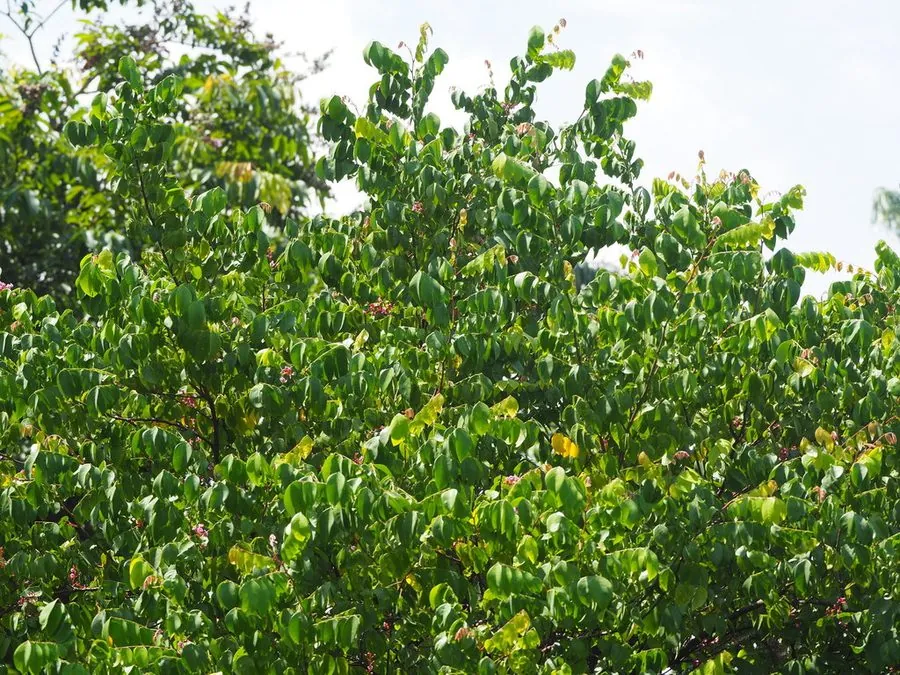

乔木 · 植物界
杨桃 Averrhoa carambola

酢浆草科常绿小乔木，果实横切呈五角星形，清甜多汁、风味独特，原产东南亚，中国华南与台湾广泛栽培。
- 分类
- 门被子植物门纲木兰纲目酢浆草目科酢浆草科属阳桃属
- 栖息环境
- 海拔 500 米以下的热带、亚热带河谷与村落旁，喜高温多湿
- 地理分布
- 原产东南亚马来群岛；中国广东、广西、福建、台湾、海南等地栽培
- 保护级别
- 暂无评估；中国未列入国家重点保护野生植物名录
物种志
杨桃为酢浆草科阳桃属常绿小乔木，高可达 12 米，树皮灰褐色，分枝多，嫩枝被短柔毛。奇数羽状复叶互生，小叶 5–13 枚，卵形至椭圆形，夜间常闭合下垂。花小，花瓣 5 枚，粉紫色至淡红色，常数朵组成聚伞花序；浆果椭圆形，具 5 条纵向棱脊，未熟时青绿，成熟后蜡黄至橙黄，果肉半透明、多汁，横切呈五角星形。
杨桃原产东南亚的马来群岛一带，喜高温多湿和充足阳光，不耐寒，中国广东、广西、福建、台湾、海南等地栽培较多，广州郊区与台湾屏东是著名产区。它一年可多次开花结果，以秋果品质最佳。果实可鲜食、榨汁、腌渍或制果酱，酸甜可口；叶片与根在民间入药，有清热生津之效。需要注意的是，杨桃含较多草酸和一种神经毒素，肾功能不全者应避免食用。
形态与习性
- 株高8–12 m，分枝多而开展
- 花期4–5 月与 10–11 月，一年可开两次
- 果期7–9 月与 12 月至翌年 1 月
- 光照喜光，荫蔽处结果少
- 水分喜湿润，不耐干旱与积水
- 土壤深厚肥沃、排水良好的沙壤土
- 主要用途鲜食、榨汁、腌渍，果干与蜜饯
趣味知识
- 杨桃果实有 5 条纵棱，横切面呈规则的五角星形，因此英文名意为“星果”。
- 杨桃有甜、酸两类品种，酸杨桃多用于加工和调味。
- 肾功能不全者食用杨桃可能引发神经中毒，应严格忌口。
- 杨桃的叶片在夜晚会闭合下垂，被认为与睡眠运动有关。